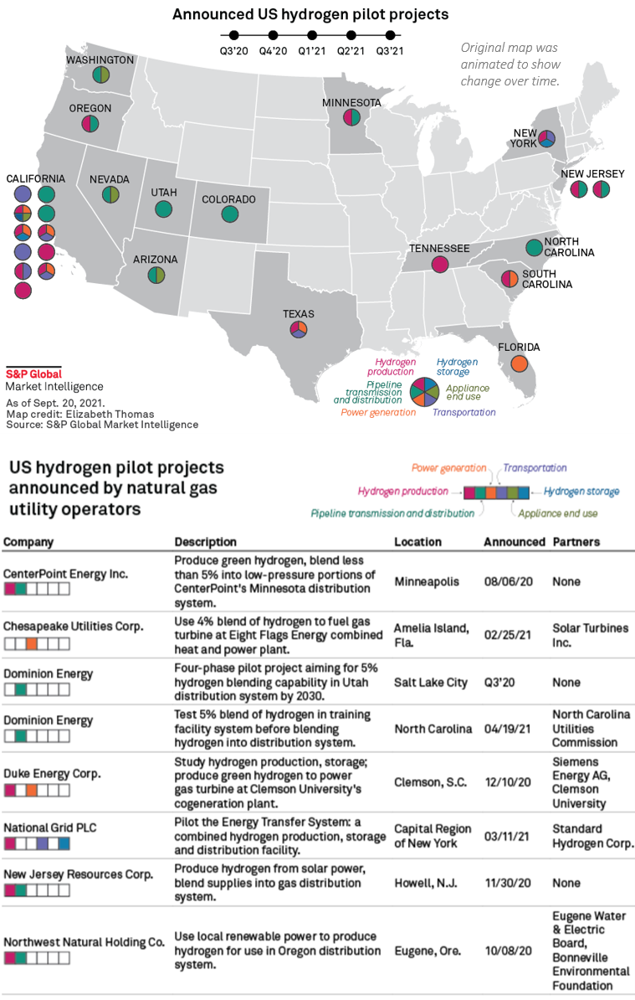
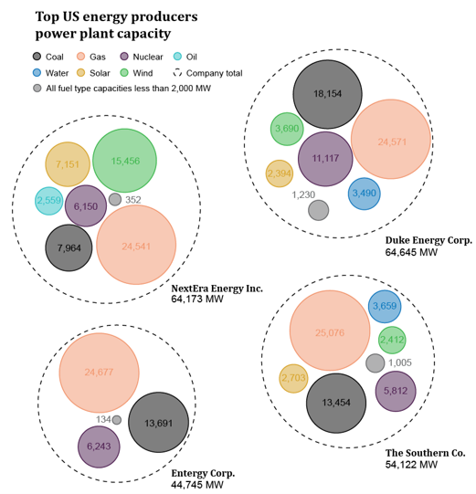
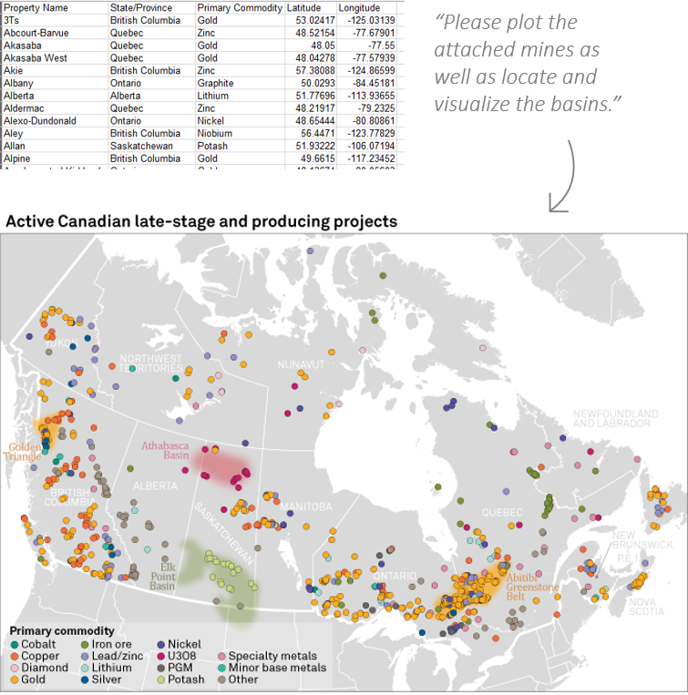

About
As a lifelong lover of design and a natural problem-solver, I have a strong background in creative direction, branding, user experience, and digital and print content development and design. In my previous roles I have extensive experience leading and mentoring multi-disciplinary teams to ensure the best products are being produced. I also specialize in developing new workflows, techniques, and branding guides to meet business needs, championing these across a diverse landscape. In all instances always approaching each situation from a lens of the value we are bringing to the client in their day-to-day workflow and how to ensure the clients are getting the most out of each product.
With roots in the field of Geography/Cartography this has brought about a way of life grounded in curiosity. While I am always keeping the bigger picture in mind, I am also considering how the smaller pieces are influencing the end result and then how this can be translated from one situation to another.
Professional Highlights
Company Rebrand: After multiple multi-national companies came together under one umbrella parent company, we needed to bring the diverse brand landscape in harmony. I was one of a few brand champion leaders to lead an effort to harmonize our approach to visuals.
The first step of this process was to understand the scope of visuals and how each legacy company produced them. This took the form of an in-depth survey that covered a wide range of graphic types.
This was then converted to a set of files that were used in small organized working groups to assess where alignment could occur and where differences were needed.

These results were presented to senior leadership across the organizations for final adjustments and approvals.
Once final feedback was collected, plans got under way to produce the final style guides. Wireframes were created and then final products produced.
The final step in the process — implementation — took place in the form of multi-level training sessions across the organization for all involved from senior leadership, to editors and reporters, to visualization specialists.
Editorial and Visual Story Telling: Information can be conveyed through a variety of formats – digital, print, news stories, visuals, tables. None of that matters unless deliberate work is put in to ensure the story being conveyed is the one meant to be told.
Categorical Details
These graphics were part of a multi-part investigative piece looking at the outlook of hydrogen pilot projects across the U.S. A strong collaboration took place between stakeholders and external data providers to plan and execute the project. This dataset started out with 26 seemingly unrelated hydrogen projects across the U.S. The reporter and I worked to create short descriptions and as many categorical details as possible to give clients a feel for the current U.S. hydrogen landscape.

Critical Identification
In this example, they were looking to tell the story of the portfolio of the top energy producers in the U.S. After a discussion with the team, we identified that most critical to the story would be to break out the energy producers' portfolios by fuel type along with the overall totals.

Visible and Relatable
What appears to be a straight forward request – plotting points and polygons on a map. The challenge here is that we needed to find a way to visually express ambiguity. Mineral basins in the ground are not solid material that ends at a given boundary. We also did not want these basins to overpower the graphic, but they needed to be visible and relatable to the mine locations and be represented in a way to associate with their mineral types.

Leadership: I have been fortunate enough to have had many strong leaders throughout my career. During my experience leading global teams in a largely remote setting, I have developed a few core principles I lead by.
Authenticity:
Above all else, I believe everyone should be their authentic self. As a leader, I strive to set this example and support others to do the same.
Clear Communication:
At their core, a leader needs to be precise and clear especially in times of uncertainty. Conveying messages, roadmaps, and expectations clearly is critical to fostering a healthy team environment.
Strive For Excellence:
As a leader, it is my responsibility to set the example for my team and my colleagues. I do this by implementing small changes that will take “good enough” at least one step further.
Include Everyone:
Inclusion to me means more than just collaboration. I believe in giving team members ownership of the team they belong to. I strive to listen to all ideas and viewpoints before making decisions. I believe in giving team members the opportunity to work on stretch assignments while being there to support them if they run into obstacles.
Be A Thought Leader:
It is my responsibility as a leader to be a center point for many moving pieces. It is my goal to help lead the team into the future as smoothly and effectively as possible. Creating content campaigns, rethinking workflows, being the networking champion that connects people with a specific skill to people in need of that specific skill are all critical to effective leadership.
Seek Knowledge:
I believe the key to success is curiosity. Being curious what other people are working on, curious about new techniques, curious about how you can improve yourself and do better. This can look like continuing education, mentorship, peer-to-peer training and consistent and continual thirst for knowledge.
Company And Team Development:
Grounded in both LEAN and Six Sigma philosophies I have participated in steering the future of both teams and companies through change and development.
Team management:
I have a proven track record in streamlining team workflows while also developing buy-in to goals that lead to team growth and success. I also have experiences with adaptability and change management as I’ve guided teams and management through restructuring.
Policy Development and Improvement:
With my strong eye for detail, I am keenly interested in streamlining operations and improving consistency. I have expertise in communicating process changes for quick understanding and implementation. I also have an eye for managing risk, as I have been intimately involved in creating policies for disputed territories, data management, style, and error management.
Client First Management:
Having a deeply engrained culture with client-centric usability top of mind is critical to success. My work experience has given me the opportunity to develop policies and support teams that deliver optimal availability and performance of products to clients.
Portfolio
Skills
I have used these skills in industries such as energy, ESG, healthcare, insurance, real estate, and natural resource management in the corporate, non-profit, and government spaces.
TOOLS
Design:
- Adobe Suite: Illustrator | InDesign | Photoshop
- Affinity: Designer | Publisher | Photo Tableau
Mapping:
- ESRI: ArcMap | ArcGIS Pro
- MaPublisher
- Google Earth
Agile Workflow Management:
- Visual Studio Team Services (vsts)
- Microsoft Team Foundation Server (tfs)
- Appian - Pathfinder
- Jira
Product Development:
- Figma
- LucidChart
- Miro
Client And Data Management:
- Salesforce
- SharePoint: Management of large file database
- Microsoft Teams
- Excel and PowerPoint: Dashboards | Brand formatting | Pivot tables | Functions
DESIGN
- Visual storytelling
- User centered design
- Wireframing
- Data visualization
- Large format plotting
- Print and digital design
- Brand development and implementation
- Typography and color theory
- Editorial
- Copy editing
LEADERSHIP CAPABILITIES
- Multi-disciplinary team management
- Workflow management and process redesign
- SaaS and product development
- Design workshop facilitation
- Corporate business presentation skills
- Data management and integration
- Data governance
- Software license management
- Proficiency leading other with skills in: VBA, Python, API Interactions, HTML, CSS, Dashboarding, JavaScript
Work Experience
NextEra Energy
GIS Specialist - Contractor Manager
June 2022 – Present -- Remote: Juno Beach, FL
- Helped upper management develop a roadmap for the evaluation of team workflow as well as identifying branding inconsistencies
- Lead a team of diverse skill levels through the early stages of developing a brand for graphical assets
- Developed workflow procedures to ensure consistency and quality across products
- Using the task management software Jira guided the team through an extensive backlog of requests
- Implemented workflow and data documentation standards to be used across the organization
S&P Global Market Intelligence
Senior Managing Cartographer
March 2016 – June 2022 -- Hybrid remote: Charlottesville, VA
- Worked in an editor capacity with news, industry, and marketing leaders to develop compelling and cohesive narratives using both text and graphics across platforms
- Collaborated cross divisionally between multiple visual teams, reporters, content creators, editors, and external clients to ensure consistency and accuracy across the product
- Led design workshops with internal and external stakeholders to produce compelling visual stories to illustrate complex datasets and processes
- Participated within the Agile framework acting as the clients advocate to ensure client needs were met bridging the gap between our client management software, Salesforce, and Agile technologies
- Worked along side scrum teams to develop user stories for product improvements based on client needs and feedback
- Led a global team of cartographers and designers helping them develop their skills and how to think differently and more creatively about the data and graphics they use
- Developed new brand standards, innovated graphic ideas, and ways to use data
National Park Service, Gateway National Recreation Area
Hurricane Sandy Recovery Data Visualization Specialist
January 2015 – February 2016 -- Staten Island, NY
- Primary designer on Gateway NRA General Management Plan graphics
- Led team of seasonal interns to achieve business unit needs
- Developed and designed products based on client’s or park unit’s needs
- Designed public-facing pamphlets, presentations, and exhibit documents
United States Census Bureau
Cartographic Products Branch Intern
July 2014 – November 2014 -- Washington, DC
- Intimate involvement with QA/QC on maps resulting from an automated process
- Used open-source software and data to complete various data and design problems
National Geographic Society
Maps Division Intern
January 2014 – April 2014 -- Washington, DC
- Primary Cartographer on the Pacific Crest Trail National Geographic Map
- Worked with and organized numerous large datasets to produce a cohesive set of maps and graphics
- Worked with a team of editors and cartographers to complete various projects
Education
Continuing education works in progress: User-Centered Design (UX/UI), Digital Marketing, Organizational Behavior
Data Analytics & Visualization
Rice University
Bootcamp
Completion: 2022
Infographics and Data Visualization
Parsons School of Design
Certificate
Completion: 2021
Master of Arts, Cartography
University of Kansas
Research: Public perception of design
Coursework completed: 2013
Bachelor of Arts, Geography
Indiana University of Pennsylvania
GIS/Cartography
Graduation: May 2012